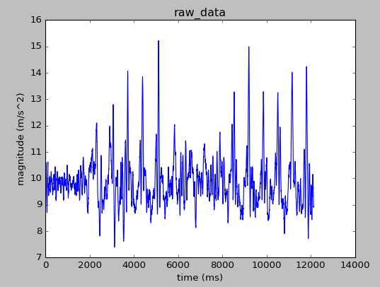
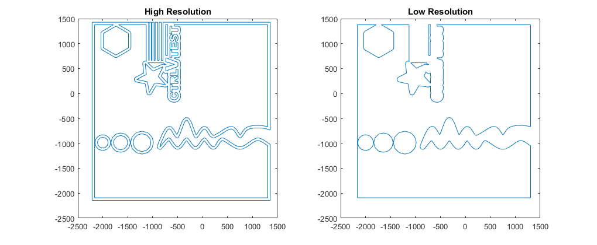
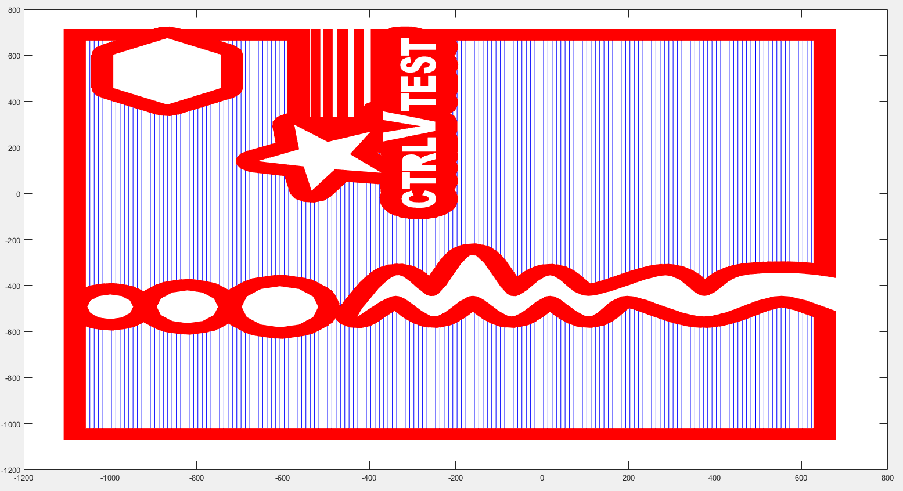

I'm Jamie Brynes
Developer and Software Engineer
- AGE21
- EMAILjamiebrynes7@gmail.com
- PHONE+44 742 903 1636
- LocationOxford, UK
Work History
Networking ASIC R&D Intern
Worked in the Forwarding Engine team and developed multiple internal tools to improve efficiency. These included: a permutable code generator for on-chip programs, an assembly simulator for a parallel computational slice, and an automatic simulation configuration and comparison tool.
Education
Engineering Science
Studied for an MEng. Achieved first-class honors in first, second, and third year exams. Received academic scholarships for exemplary performance in all years.
Relevant Coursework
Microcontroller Systems, Structured Programming, Object-Oriented Programming, Operating Systems, Computer Networks, Generative and Discriminative Machine Learning, Machine Vision & Robotics
Professional Skills
| Category | Proficiency in descending order |
|---|---|
| Programming Languages | Python, Matlab, Java, C++, C, Bash |
| Web Technologies | HTML, CSS, Javascript, jQuery, Bootstrap |
| Software Engineering | Unit Testing, Object-Oriented Design, Design Patterns |
| Software Tools | Git, LaTeX, vim, Gerrit, Jenkins |
| Platforms | Windows, Linux, Android |
| Languages | English, Spanish |
Honors & Awards
Projects
Ultimately, these two algorithms should come together to enable a study on the link between day-to-day activity and length and quality of sleep as it relates to poor fitness in general. This could then be extended to an early warning system for conditions like heart failure or as diagnostic support for conditions like chronic obstructive pulmonary disease if a link is proven
Both these algorithms should be robust enough to deal with the noisy signals produced by accelerometers, efficient enough to run on mobile devices, and powerful enough to give accurate health markers.
Step Counting Algorithm
Counting steps effectively boils down to detecting the peaks of the accelerometer signal, these correspond to the heel strikes of the user. Unfortunately, accelerometer data is very noisy and thus requires some processing before we can do the peak detection. An example of a accelerometer trace with steps can be seen below.
There are a number of algorithms for peak detection, these roughly break down into three categories:
- Time Based Algorithms
- Frequency Based Algorithms
- Machine Learning or Classification Algorithms
By examining relevant scientific literature and analyzing the performance and complexity of a set of algorithms, I decided to pursue and test Windowed Peak Detection as the algorithm of choice.
The algorithm was initially written in Python for ease of implementation and testing, however, it will later be translated into Java for use on a mobile device. The algorithm works much as an assembly line does, data flows from stage to stage in queues (or conveyor belts!) where at each stage some sort of work is done on them.
The five stages to the algorithm are as follows:
- Data Pre-Processing
- Data Smoothing
- Peak Scoring
- Peak Detection
- Post Processing
A detailed description of each of these stages can be found on my blog.
Step Counter Validation
To validate the algorithm's performance, we need collect some ground truth data along with the accelerometer data. This means that we need an accurate count of how many steps were had in each trace. To this end a device has been designed to capture the timestamps and count of the user's steps during the trace.
A Bluetooth LowEnergy enabled Arduino board is used as the control center for this operation. The initial device design used push buttons strapped to the bottom of the user's shoes to record steps. However, this device proved to be too fragile for extended use and had problems recording data on certain surfaces.

In order to improve the device, the design was swapped to use velostat as a pressure sensor on the sole of the shoe instead, and use thresholding to determine a step. This device worked much better in practice with regards to robustness and variety of surfaces.

Step Counter Parameter Selection
The algorithm is heavily parameterized and each stage has a few implementation choices. To decide upon the best combination of parameters and implementation, I needed to exhaustively search the parameter space for the optimal set.
This would happen in two stages, first a rough search to zone in on areas of high potential, and then a finer search in those areas to yield the close to optimal parameter set.
Suddenly, we had a computational problem on our hands. In total, there are just over 3000 permutations of parameters for the algorithm. If we want to test every single one of these over a sufficiently large set of data, this would take a long time on a single machine.
The clear solution was to distribute the load.
The architecture of the set-up is to have a web server used as a distribution and collection center where workers could get their next set of parameters and return the results. Then we can have any number of worker-clients connect to this web server and run through the algorithm.
A small web application was developed Python using the Flask framework that provides data in the form of JSON to the worker-client. Google Cloud Compute will be used to spin up 'N' number of workers.
The full parameter search has not been undergone at the time of writing, a more complete data set is necessary before optimization can occur
Sleep Onset and Fragmentation Detector
This part of the project is still in the research phase. However, check back here for regular updates as development gets underway
This broadly broke down into 3 main areas of focus: Fabrication, Imaging, and Control/Software.
I initially did some research into a fabrication technique called stereolithography. This technique involves using the energy of a laser to polymerize liquid resin into a solid structure. This is a common technique used in 3-D printers that has been around since the 1970s. We decided to include this technique as a large scale first stage fabrication. The idea being, that you would fabricate large macro-structures with stereolithography and then do smaller, finer details with another technique like 2-photon polyermization or STED lithography.
After the selection of the techniques were complete, I pivoted to the software side and started to develop a small software suite to accompany the facility to allow users to easily fabricate objects. The main goal of this software suite was to convert a 3-D object model (in .stl format) into a series of instructions for the control system to follow to fabricate the objects.
Since this was a design exercise rather than a build exercise I focused mainly on breaking down the 3-D object into build lines for the fabrication to follow (since the fabrication process was layered). The switching between techniques, loading of material, etc was assumed.
This process consists of three main stages:
- Object Slicing
- Resolution Separation
- Laser Path Generation
Object Slicing
This stage of the process is designed to split the 3-D model object into discrete slices corresponding to the fabrication layers. In effect, this is taking the 3-D object file and repeatedly calculating the intersection between the object and a plane.
The main challenge is that th 3-D object file is tesselated, that is to say, it is described by a triangular surface mesh. So for each plane, we must calculate the intersection points of each triangle with the plane. This is relatively expensive, although some optimizations can be made with height bounding to cut down the search space.
After the set of intersection points was calculated, the points had to be interpolated together. Each intersection with a triangle yielded a line segment, so it was stiching together the line segments in order. Note that sometimes we had more than one closed contour for each slice, so we have a set of contours describing the intersection.
The final part of the process was to indicate whether a given contour was defining an outer edge or an inner edge. This was done in relative fashion, noting that if any point of a contour lies inside another, then we known that contour is fully inside.
At the end of the process, we have a sets of contours describing the intersection for each layer, with each contour classified as inner or outer. An example of a sliced R2-D2 model is shown below, with the layers reconstructed into the full object. Blue contours indicate outer contours, red contours indicate inner contours.

Resolution Separation
The next stage in the process was to take each layer and separate the areas of fabrication into high-resolution and low-resolution. The main insight here is to recognize that all the high resolution data is near the edge of the model, the interior can be considered as a large contiguous box of low-resolution area.
So now the problem becomes much more simple, we merely need to define a boundary that is some distance 'inward' from the edge (inward here meaning toward the object vs empty space) and smooth this boundary out. Luckily, the action of moving the edge inward will actually smooth out the edge too! So we shrink outer contours and expand inner contours and resolve any conflicts in the new boundaries.
This is a very simple way of separating resolutions as demonstrated below with a 3-D printer test object.
Laser Path Generation
The final stage in the process is to generate the laser paths for each process for each layer. This is quite simple to do, simply create a line across the layer in some direction, calculate the intersection points, then shift the line in a perpendicular direction and repeat. This gives a set of paths to follow that should result in the laser paths assuming a certain polyermization width.
An example of this is shown below with the 3-D printer test object. Note that the red areas are actually lines of very high density.
